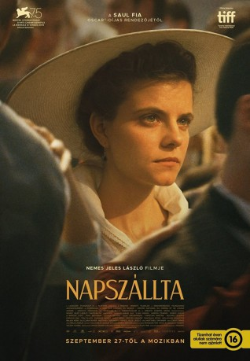

#11983 Sunset
 
 IMDB-Wertung: 6.4 / 10
IMDB-Wertung: 6.4 / 10  Tomatometer: 29
Tomatometer: 29  Metascore: 65
Metascore: 65 
Das Hutmachergeschäft Leiter ist nicht nur bekannt für seine außergewöhnlichen Kreationen, sondern auch ein Ort großer Träume. Zumindest für die junge Iris Leiter, die 1913 nach Budapest kommt, um in dem Laden als Hutmacherin anzufangen, der einst ihren Eltern gehörte und in dem sie ihr Leben verloren. Der jetzige Inhaber Oskar Brill weist jedoch die junge Frau ab. Aber Iris hat nicht vor, Budapest zu verlassen. Beharrlich macht sie sich auf die Suche nach ihrer Vergangenheit. Dabei kommt sie einem Geheimnis auf die Spur, das sie nicht nur zu einem gewissen Kalman Leiter, sondern auch bis in die höchsten Kreise der österreichisch-ungarischen Gesellschaft führt.
Jahr: 2018
Dauer: 136 Minuten
FSK: 12
Land: Ungarn Studio: MFA+ FilmdistributionTonspuren:
Untertitel: Deutsch,
Auflösung: 1080p (1920x1040) Größe: 7034 MB
Genre: Drama, Mystery
Regisseur: László Nemes
Drehbuch: László Nemes, Clara Royer, Matthieu Taponier
Soundtrack: László Melis
Darsteller:
 Susanne Wuest als The Princess
Susanne Wuest als The Princess Vlad Ivanov als Oszkár Brill
Vlad Ivanov als Oszkár Brill Björn Freiberg als Man in White
Björn Freiberg als Man in White Urs Rechn als Ismael
Urs Rechn als Ismael- Juli Jakab als Írisz Leiter
- Levente Molnár als Gaspar
- Judit Bárdos als Szeréna
- Marcin Czarnik als Sándor
 Christian Harting als Otto von König
Christian Harting als Otto von König- Mihály Kormos als The Caretaker
- Julia Jakubowska als Countess Rédey
- Sándor Zsótér als Doctor Herz
- Áron Öze als Jubilee Man
- Uwe Lauer als The Colonel
- Mónika Balsai als Mrs. Müller
- Balázs Veres als Guy who Stare at Leiter
- Erik Novák als Player 2
- János Kulka als Leopold
- Evelin Dobos als Zelma
- Nóra Horváth als Movement artist
- Thanh-Huy Phan als Chinese Manservant
- Elemer Szatmari als Old Man
- Zsolt Végh als Policeman 1
- Péter Kertész als Man with Spectacles
- Péter Fancsikai als Robert
- Miklós Székely B. als White-bearded Coachman
- Csaba Krisztik als Coachman with a Red Cap
- Tamás Varga als Fisherman 2
- Balázs Czukor als Nulla
- Dusán Vitanovics als Balkó
- Levente Orbán als Gigantic Coachman
- Tamás Polgár als Laughing Coachman
- Márton Patkós als Bald Coachman
- Kati Lázár als Old Woman
- Sándor Terhes als Braun
- Tamás Fodor als Izidor
- Orsolya Moldován als High-Life Journalist
- Laurent Winkler als High-ranking Officer
- Ákos Horváth als Tall Noncomissioned Officer
- Boglárka Varga als Movement artist
- Balázs Szitás als Man in Rags
- Balázs Bodolai als Butler
- László Melis als Servant 2
- Attila Menszátor-Héresz als Police Officer
- Gergely Mészáros als Movement artist
- Léna Perczel als Lady 2
- Péter Györi als Fisherman 1
- Eszter Csépai als Milliner 2
- Tamara Dózsa als Fanni Braun
- Rozi Székely als Assistant
Datei: X:\2018(N-Z)\Sunset (2018, FSK12, 1920x1040).mkv seit 01.11.2019
Festplatte: HD 2018(G-Z)-2019(A-Z)
 Es gibt insgesamt 172 Filme in der Gruppe '2018(N-Z)'
Es gibt insgesamt 172 Filme in der Gruppe '2018(N-Z)'